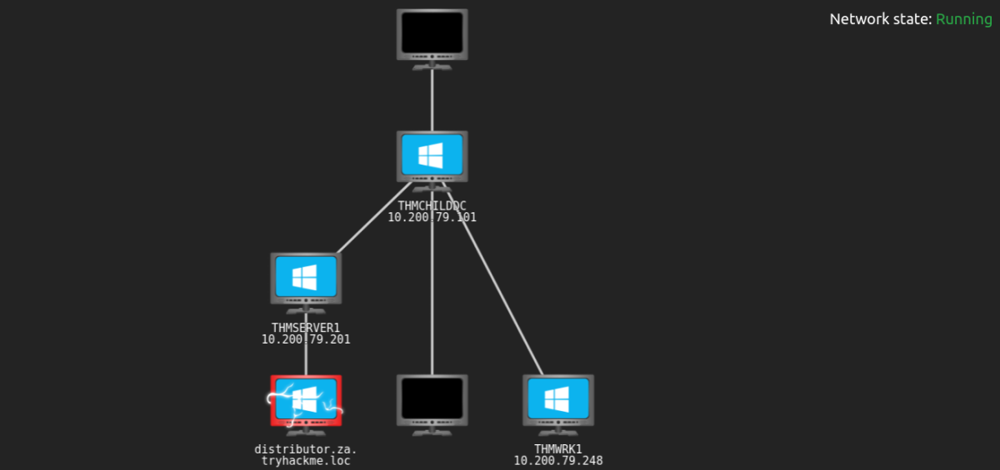
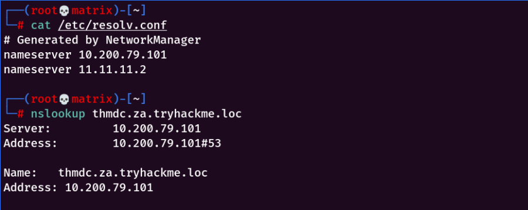
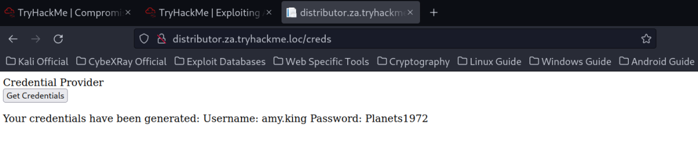
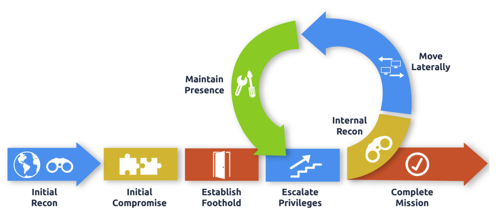

Exploiting Active Directory
Exploiting Active Directory

Using Networks in Tryhackme:
First, Download a different vpn file. Named: exploitingad.ovpn from Tryhackme
Then,
You will have to configure DNS on the host on which you are running the VPN connection. In order to configure our DNS, we must edit the /etc/systemd/resolved.conf file. Uncomment the DNS line and add the IP of THMDC: (As Shown in Network Diagram Above)

Finally, Restart the service:
systemctl restart systemd-resolved
Or
Add the DNS in GUI Network Manager/nmtui tool (1st is the THM DNS then use default in the 2nd place).
and restart the Network Manager service:
systemctl restart NetworkManager
Testing DNS Status
nslookup thmdc.za.tryhackme.loc

Requesting Your Credentials
To simulate an AD breach, you will be provided with your first set of AD credentials. Once your networking setup has been completed, navigate to http://distributor.za.tryhackme.loc/creds to request your credential pair. Click the "Get Credentials" button to receive your credential pair that can be used for initial access.
This credential pair will provide you RDP and SSH access to THMWRK1.za.tryhackme.loc. THMWRK1 can be seen as a jump host into this environment, simulating a foothold that you have achieved. You can use Remmina or any other similar Remote Desktop client to connect to this host for RDP. Remember to specify the domain of za.tryhackme.loc when connecting.
For SSH access, you can use the following SSH command:
ssh za.tryhackme.loc\\<AD Username>@thmwrk1.za.tryhackme.loc

Credentials Received:
Username: amy.king
Password: Planets1972
AD Exploitation
Now that we have performed our internal recon and understand the lay of the land regarding the AD structure and environment, it is time for the exploitation phase. This phase exploits misconfigurations to perform a combination of lateral movement and privilege escalation until we reach a suitable position to execute our goals, as shown in the diagram below. This phase is usually combined with persistence to ensure that we can't lose the new position we gain, but this will be covered in the next room. It is also usually combined with additional enumeration since our new position might allow us to acquire additional information about the lay of the land.

Learning Objectives
In this network, we will cover several methods that can be used to exploit AD misconfigurations. This is by no means a complete list, as available methods are usually highly situational and dependent on the AD structure and environment. However, we will cover the following techniques for exploiting AD:
▪ AD Delegation
▪ Forcing Authentication Relays
▪ Group Policy Objects
▪ Targeting AD Users
▪ Domain Trusts
▪ Silver and Golden Tickets